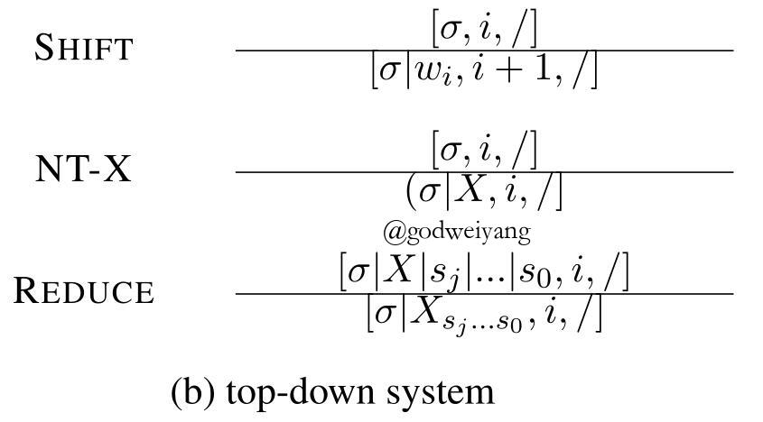

论文地址：In-Order Transition-based Constituent Parsing
代码地址：github
今天要介绍的这篇论文是成分句法分析领域目前的第三名，结果最高的几篇paper可以参见ruder在github整理的列表：github。
下面就是成分句法分析目前排名：
| Model | F1 score | Paper / Source |
|---|---|---|
| Self-attentive encoder + ELMo (Kitaev and Klein, 2018) | 95.13 | Constituency Parsing with a Self-Attentive Encoder |
| Model combination (Fried et al., 2017) | 94.66 | Improving Neural Parsing by Disentangling Model Combination and Reranking Effects |
| In-order (Liu and Zhang, 2017) | 94.2 | In-Order Transition-based Constituent Parsing |
| Semi-supervised LSTM-LM (Choe and Charniak, 2016) | 93.8 | Parsing as Language Modeling |
| Stack-only RNNG (Kuncoro et al., 2017) | 93.6 | What Do Recurrent Neural Network Grammars Learn About Syntax? |
| RNN Grammar (Dyer et al., 2016) | 93.3 | Recurrent Neural Network Grammars |
| Transformer (Vaswani et al., 2017) | 92.7 | Attention Is All You Need |
| Semi-supervised LSTM (Vinyals et al., 2015) | 92.1 | Grammar as a Foreign Language |
| Self-trained parser (McClosky et al., 2006) | 92.1 | Effective Self-Training for Parsing |
摘要
基于转移的成分句法分析主要分为两种：
- 一种是自顶向下（top-down）的方法，按照前序遍历（pre-order）的顺序生成句法树。这种方法可以更好地利用全局信息，但是需要一个强大的编码器来对每个短语成分进行编码。
- 一种是自底向上（bottom-up）的方法，按照后序遍历（post-order）的顺序生成句法树。这种方法可以充分利用子树的特征来进行分析，但是却无法利用全局信息。
本文的模型就对这两种方法进行了改进，采用中序遍历（in-order）的顺序来生成句法树。单模型最终取得了91.8的F1值（貌似也不是特别高？），采用监督重排序之后F1值提升到了93.6，采用半监督重排序之后F1值提升到了94.2。所以看起来还是重排序起了很大的作用。
基于转移的成分句法分析
首先简要介绍一下这三种基于转移的句法分析方法。
自底向上的转移系统
自底向上的转移系统是基于后序遍历的，例如对于下图这棵句法树，算法产生结点的顺序为3、4、5、2、7、9、10、8、6、11、1。
a图是未经二叉化的句法树，b图是二叉化之后的句法树，二叉化之后的结点要用l和r来区分头结点。其实不二叉化也是可以的，伯克利一帮人的做法就是用$\emptyset $来作为临时结点，构造树的时候去掉就行了。
句法分析系统如下：
每个时刻的状态用三元组$[\sigma ,i,f]$来表示，分别表示栈中元素、buffer的第一个元素在句子中的下标、句法分析结束标记。系统一共有四个操作：
- SHIFT： 从buffer中移进一个单词到栈里。
- REDUCE-L/R-X：将栈顶两个结点归约为一个父结点X。
- UNARY-X：将栈顶元素归约为一元结点X。
- FINISH：句法分析结束。
上面那个句法树按照该模型分析的话过程如下：
优缺点很显然，可以充分利用已生成的子树来对父结点的预测进行分析，但是不能利用全局信息（也就是其他子树、父结点等信息），并且需要提前进行二叉化（这点可以用临时结点标记来规避）。
自顶向下的转移系统
自顶向下的转移系统是基于前序遍历的，例如对于之前那棵句法树，算法产生结点的顺序为1、2、3、4、5、6、7、8、9、10、11。
句法分析系统如下：

系统一共有三个操作：
- SHIFT： 从buffer中移进一个单词到栈里。
- NT-X：对一个父结点生成出它的一个子结点X。
- REDUCE：将栈顶的若干个结点归约为一个结点，并且全部出栈，注意它们的父结点这时已经在栈顶了。
上面那个句法树按照该模型分析的话过程如下：
优缺点也很显然，可以充分利用全局信息，但是因为预测子树的时候，子树还没有生成，所以无法利用子树的特征来进行分析，所以需要提前对句子的每个短语进行编码。
采用中序遍历的转移系统
为了协调上面的两种问题，本文提出了一种基于中序遍历的转移系统。
其实采用中序遍历也符合人们的直觉判断，比如你读到一个单词“like”，脑子里首先就会想到，这个可能和下面短语共同组成了动词短语VP，然后接着往下看，果然印证了你的猜想。
中序遍历就是采用这种思想的，例如对于之前那棵句法树，算法产生结点的顺序为3、2、4、5、1、7、6、9、8、10。
句法分析系统如下：
系统一共有四个操作：
- SHIFT： 从buffer中移进一个单词到栈里。
- PJ-X：向栈里移进父结点X，来作为栈顶结点的父结点。
- REDUCE：将栈顶的若干个结点归约为一个结点，并且全部出栈，注意它们的父结点在出栈元素的倒数第二个。然后再将父结点入栈。
- FINISH：句法分析结束。
上面那个句法树按照该模型分析的话过程如下：
该转移系统还有很多变体。对于短语(S, a, b, c, d)，可以令它在栈中S结点之前的子结点个数为$k$，例如对于上面的中序转移系统，栈里存放顺序是“a S b c d”，那么$k = 1$，如果栈里存放顺序是“a b S c d”，那么$k = 2$。而对于自底向上的转移系统，$k$就是正无穷，对于自顶向下的转移系统，$k$就是0。
句法分析模型
对于每一个状态，模型采用三个LSTM来预测当前步动作，结构如下图所示：
一个LSTM用来对栈顶元素进行编码，一个LSTM用来对buffer中所有元素进行编码，一个LSTM用来对之前预测完毕的所有动作进行编码。
单词表示
对于每个单词，用预训练词向量、随机初始化词向量、POS向量拼接起来，然后经过一个前馈神经网络来作为最终的单词表示：
\[{x_i} = f({W_{input}}[{e_{ {p_i}}};{\bar e_{ {w_i}}};{e_{ {w_i}}}] + {b_{input}})\]
其中${e_{ {p_i}}}$表示POS为$p_i$的向量，${\bar e_{ {w_i}}}$表示单词$w_i$的预训练词向量，${e_{ {w_i}}}$表示单词$w_i$的随机初始化词向量。$f$函数通常取ReLU。
栈里的短语表示
对于自顶向下和in-order的转移系统，由于不需要二叉化，所以采用如下图所示的LSTM来对栈里的短语进行编码：
具体的短语表示为：
\[{s_{comp}} = (LST{M_f}[{e_{nt}},{s_0}, \ldots ,{s_m}];LST{M_b}[{e_{nt}},{s_m}, \ldots ,{s_0}])\]
其中${e_{nt}}$是父结点的向量表示，其他都是子结点的短语表示。
而作为对比实验，自底向上的转移系统因为是二叉树，所以LSTM略有不同，结构图如下所示：
唯一的区别就是不管你短语的单词顺序如何，都要把中心词也就是头结点放在前面。
贪心动作预测
上面的两个小节将buffer和栈里的元素都进行了编码，最后就要对当前状态进行动作预测了。
假设第$k$个状态为$[{s_j}, \ldots ,{s_0},i,false]$，那么当前状态每个动作的概率为：
\[p = SOFTMAX(W[{h_{stk}};{h_{buf}};{h_{ah}}] + b)\]
其中${h_{stk}}$是栈里的LSTM编码结果：
\[{h_{stk}} = LSTM[{s_0}, \ldots ,{s_j}]\]
${h_{buf}}$是buffer里的LSTM编码结果：
\[{h_{buf}} = LSTM[{x_i}, \ldots ,{x_n}]\]
${h_{ah}}$是之前动作序列的LSTM编码结果：
\[{h_{ah}} = LSTM[{e_{ac{t_k}}}, \ldots ,{e_{ac{t_0}}}]\]
最终的损失函数采用交叉熵：
\[L(\theta ) = - \sum\limits_i {\sum\limits_j {\log {p_{ {a_{ij}}}}} } + \frac{\lambda }{2}{\Vert \theta \Vert ^2}\]
实验
实验的超参数设置如下：
经过对比实验可以发现，结果比自底向上和自顶向下的转移系统都要略高一点，就算加上了重排序，还是略高一点。单模型的话，和2017年之前的结果相比的确是最高的，但是91.8的F1值现在看来不是特别高了，毕竟伯克利基于CKY算法的chart-parser都已经到了92多甚至93了。
详细结果如下表：
模型在依存句法分析和CTB上的表现也都很不错。
总结
本文提出了一种基于中序遍历转移系统的成分句法分析模型，主要的动机还是基于人类阅读时的直觉，该模型协调了自底向上和自顶向下转移系统的优缺点，在采用重排序之后，结果达到了非常高的水准。
当然我个人认为模型也存在一些改进的地方：
- 单词的表示可以加上Char-LSTM。
- 预测阶段可以采用之前文章提到的Dynamic Oracle技术，来减少预测错误的发生。详见之前的文章：地址。不过这里的Dynamic Oracle要重新设计了，设计好了说不定又可以发一篇论文了？（手动滑稽）